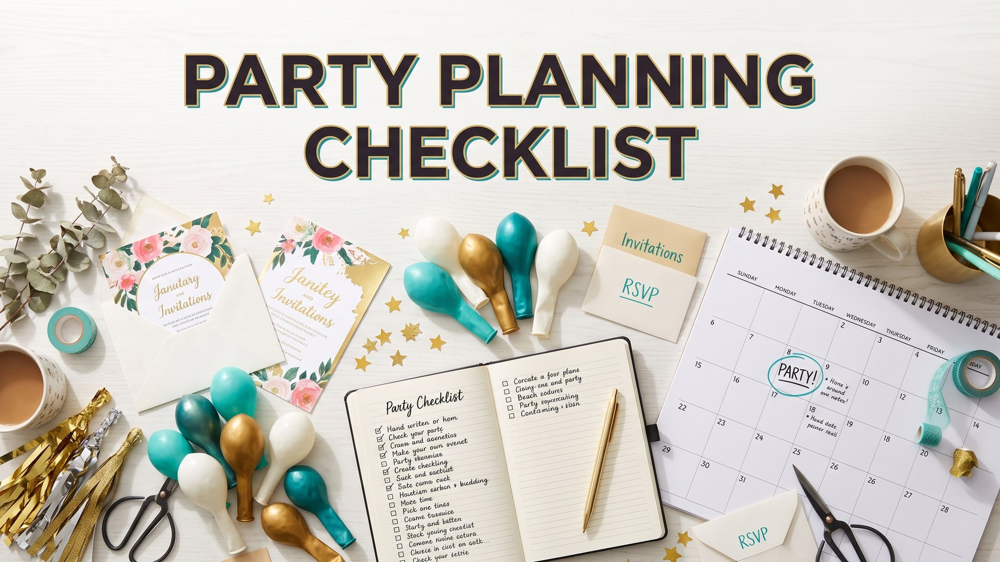

How to Plan a Party: Step by Step Checklist & Timeline
Published October 10, 2026 · Updated October 10, 2026 · By EventBuzz Team

A great party feels effortless to guests, which usually means someone planned it in calm, small steps weeks earlier. This guide breaks party planning into a simple timeline anyone can follow, whether you are hosting eight friends for dinner or forty people for a milestone birthday. Work through it in order and party day becomes the reward instead of the stress test.
You will find what to decide three to four weeks before, what to lock in one week out, the final preparations in the last days, and a relaxed structure for the day itself. Along the way we cover guest lists, food and drink quantities, and basic budgeting. When you reach the fun parts, our guide to the best party games for adults will keep every guest entertained.
Step 1: Three to Four Weeks Before
Start with decisions, not shopping. Choose the date, the start time and a realistic end time, then fix your budget ceiling before anything else tempts you. Decide the occasion and tone: a relaxed garden afternoon, a themed birthday, or a dressed-up dinner all demand different spending.
Draft the guest list now, because every later decision, chairs, food quantities, even the venue, depends on the headcount. Send invitations as soon as the list feels right; digital invites with a clear reply deadline save endless chasing. If you need a venue or a rental item such as extra tables, a speaker or a projector, book it in this window while choices remain. Finally, pick a simple theme or colour scheme. It does not need a name; two colours and one idea, like citrus and garden, will quietly organise every later purchase.
Step 2: One Week Before
Confirm your numbers. Chase outstanding replies politely, and note dietary needs while you still have time to adapt. Finalise the menu with this rule: fewer dishes, done well. Plan one main, two or three sides, one dessert, plus snacks guests can graze on from the first minute. Write the full shopping list in store order, split into non-perishables you can buy now and fresh items for later.
Plan drinks with equal calm: water always, one signature option, tea or coffee for later, and enough ice, which is the item hosts most famously forget. Check your supplies of plates, glasses, serving spoons, rubbish bags, candles and batteries for lights or speakers. Choose your games and music now, not at the door; our party games guide lists options by group size, and a prepared playlist means the evening never goes silent.
Step 3: Two to Three Days Before
This is your heavy lifting window, deliberately placed so party day stays light. Buy all non-perishable food and drinks, and most fresh items except delicate produce. Cook anything that improves with time, such as sauces, marinades and many desserts, and freeze or refrigerate with labels. Confirm any deliveries, cakes or rentals, and charge cameras, speakers and lights.
Do a honest walkthrough of the space. Where will coats go? Where will drinks live so guests do not queue in the kitchen? Is there a seat for every bottom at least some of the time? Small answers now prevent the famous party-day furniture panic.
Step 4: The Day Before
Decorate today, not tomorrow. Hang lights and banners, arrange the table, and set out serving dishes with small notes showing what goes where; future-you will be grateful. Our budget decoration ideas can make this step look expensive for very little. Chill drinks, finish food prep, lay out guest towels and soap, and prepare a simple welcome area. Then stop. A host who sleeps is a host who smiles, and guests remember your mood more than your centrepiece.
Step 5: Party Day
Work a short morning list: fresh items collected, ice in place, food reheating scheduled backwards from serving time, music on low before the doorbell. Get yourself ready earlier than feels necessary; the first guest always arrives while you are mid-task otherwise. Once people arrive, your job changes from organiser to host: greet, introduce guests who know nobody, refill glasses, and let small imperfections pass unremarked. Build one natural peak into the evening, a toast, a game, the cake, then let the night soften. Take photographs early, while everyone is fresh and the table still looks beautiful.
Guest List, Food and Budget Basics
Invite people who will enjoy each other, not merely people you feel obliged to collect. For food, plan generous snacks, roughly one main portion per guest plus a small buffer, and dessert for about three quarters of guests, since some always pass. Budget by category in this order: food and drink first, then venue or rentals, then decoration, then extras. Keep a small contingency, because every party invents one surprise cost. If the total grows uncomfortable, trim decoration before food; nobody reminisces about chair sashes, but everyone remembers being fed well. For at-home inspiration, see our birthday party ideas at home.
Frequently Asked Questions
How far in advance should I plan a party?
Three to four weeks is comfortable for most home parties. Small gatherings can come together in a week, while weddings and large milestone events need several months. The timeline above scales to all of them.
How much food should I prepare per guest?
Plan one main portion per guest plus a small buffer, generous snacks for grazing, and dessert for roughly three quarters of the guest list. Always over-plan water, soft drinks and ice.
What is the most commonly forgotten party item?
Ice, followed by rubbish bags, serving spoons and extra toilet paper. The one-week-before supplies check in this guide exists precisely to catch them.
How do I keep party costs under control?
Set the budget before shopping, spend first on food and drink, decorate simply, and keep a small contingency. A theme of two colours makes even budget purchases look coordinated.
What should a host do during the party itself?
Host, do not work. Greet guests, make introductions, keep glasses filled, run one planned highlight like a game or toast, and let the rest unfold. Preparation done earlier makes this possible.
Conclusion
Good parties are built backwards: a clear date, an honest guest list, food planned with margin, and decorations finished the day before. Follow the five steps and you will spend the evening with your guests instead of your oven. Next, pick your entertainment from the best party games for adults.
Happy hosting — may your party be the one they talk about all year.